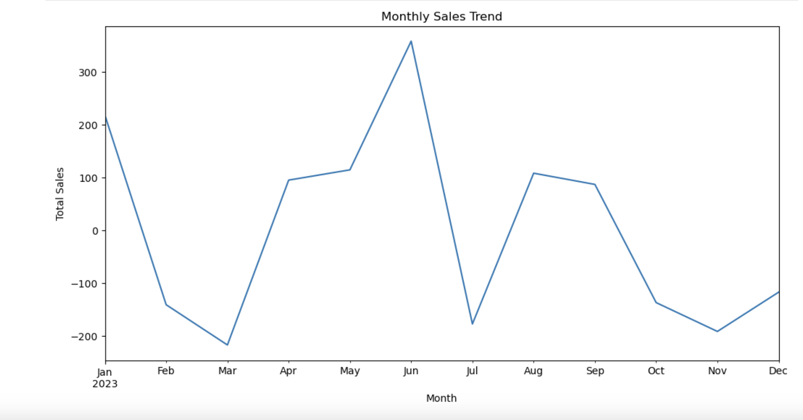
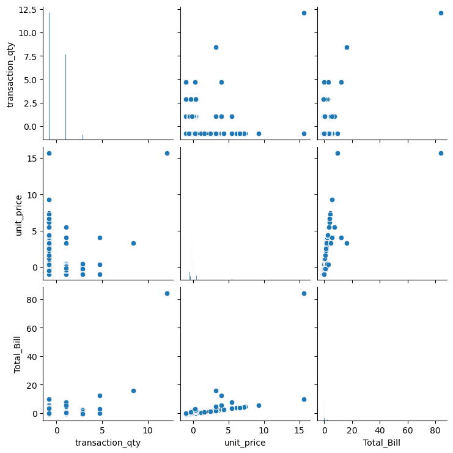

Coffee Shop Sales Exploratory Data Analysis and Forecasting Model
This portfolio entry outlines an EDA and forecasting model development using a Coffee Shop Sales dataset. The project demonstrates proficiency in Python for data analysis, including preprocessing, visualization, and predictive modeling techniques. The dataset comprises transactions from a coffee shop, with features like transaction quantity, unit price, total bill, store location, product category, and transaction time.
Data Preprocessing
The initial steps involve loading the data using pandas and inspecting it for missing values, ensuring a clean and complete dataset for analysis. Subsequent preprocessing includes:
- Merging transaction_date and transaction_time into a singular datetime column for better temporal analysis.
- Dropping duplicates to ensure data uniqueness.
- Standardizing numerical values such as transaction_qty, unit_price, and Total_Bill using StandardScaler to normalize the data distribution.
Feature Engineering
To enhance the model's predictive capabilities:
- Categorical variables (e.g., store_location, product_category) are transformed into dummy variables, facilitating their use in regression models.
- A comprehensive set of features is selected, focusing on both time-related and categorical variables, to predict the total bill.
Data Visualization
The script employs seaborn for various visualizations:
- Boxplots for numerical columns to identify outliers and distribution characteristics.
- Pair plots for selected numerical features to observe relationships and distributions across multiple dimensions.
- Scatter plots, particularly between unit_price and Total_Bill, to examine linear relationships.
Monthly Sales Trend Analysis
The first chart presents a clear visualization of the monthly sales trend throughout the year 2023. It appears to depict significant seasonality in sales, with notable peaks and troughs. For instance, a substantial peak in May suggests a high demand period, possibly due to seasonal promotions or events. Conversely, the sales dip in June and September might indicate a cyclical downturn, which could be due to various external factors. Understanding these trends is crucial for strategic planning, inventory management, and targeted marketing campaigns to optimize sales performance throughout the year.
Inter-Feature Relationship Examination
The second chart is a matrix of scatter plots, providing a pairwise comparison of three key metrics: transaction quantity, unit price, and total bill. This visualization is instrumental in uncovering relationships between the quantities purchased, pricing strategies, and the resultant sales. For example, the scatter plot correlating transaction quantity with the total bill indicates a positive relationship, suggesting that higher sales volumes typically lead to increased revenue. However, the distribution of points also suggests a diminishing return for larger quantities, which may imply bulk discounts or pricing strategies that incentivize larger purchases. The plot between unit price and total bill might reveal insights into pricing elasticity and its effect on sales revenue.
Sales Forecasting Model
A Linear Regression model is developed to forecast sales, incorporating:
- A data split into training and testing sets for model evaluation.
- A pipeline combining one-hot encoding for categorical features, standard scalar for numerical features, and linear regression for modeling.
- Evaluation of model performance through the Root Mean Squared Error (RMSE) metric, offering a quantitative measure of the model's accuracy.
Analysis of Output
The script's structured approach to EDA and model development provides insights into the coffee shop's sales dynamics. The preprocessing steps ensure data quality, while feature engineering enhances the dataset's informational value. Visualizations offer intuitive understanding of key relationships and data characteristics, pivotal for informed decision-making.
The sales forecasting model, evaluated using RMSE, signifies the project's culmination into a predictive analytics tool. This model can serve as a foundation for further refinement and deployment, aiding the coffee shop in inventory management, marketing strategies, and financial planning.
Conclusion
This project exemplifies a comprehensive analytical approach to understanding and forecasting sales in a retail context. Through meticulous data preparation, exploratory analysis, and predictive modeling, it showcases the potential of data analytics in transforming business operations and strategic planning. The proficiency in leveraging Python's analytical libraries underscores a robust skill set in data science, ready for application in a wide array of professional analytics scenarios.